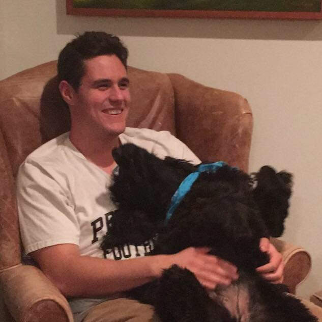

- Tufts University, Medford MA
- Expected Graduation May 2019
- Majoring in Cognitive and Brain Sciences with a focus in Computer Science
- Martin Research and Consulting, Research Assistant, June 2017 - August 2017
- Researched method of empirically determining malintent
- Gained experience in methodical research, working cohesively in a team, and professionalism with a client
- Tufts University, Computer Science Teaching Assistant, January 2017 - Present
- Explain introductory concepts to computer science students
- Gained valuable experience debugging other peoples' programs
- Grade labs, homeworks, and projects
- The Bancroft Chophouse, Server Assist, May 2016 - August 2016
- In charge of clearing tables, setting tables, running food and drinks, and generally assisting the server
- Gained experience working first hand with customers, and meeting high expectations of
service and hospitality
- Worked closely with multiple servers, other server assists, as well as chefs and managers
- Experienced working as part of a team
- Practice good programming technique (e.g. efficiency, modularity, unit testing)
- Strong debugger
- Good organizational and problem solving skills
- C++, Java, Javascript, HTML/CSS
- Experienced using Git
- NodeJS, JQuery, Bootstrap
- Knowledgeable about computer science data structures and associated algorithms
- Comfortable with Microsoft Word, Excel, and Powerpoint
- Computer Science 86: Graphical User Interfaces with Object Oriented Programming (currently enrolled)
- Computer Science 150: Developmental Robotics (currently enrolled)
- Computer Science 20: Web Programming
- Computer Science 15: Data Structures
- Computer Science 11: Introduction to Computer Science
- Philosophy 33: Logic